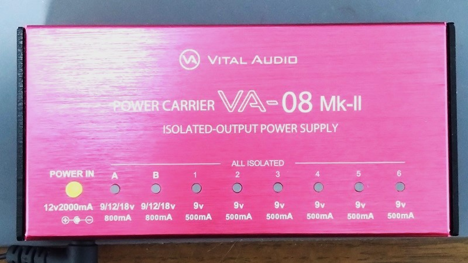
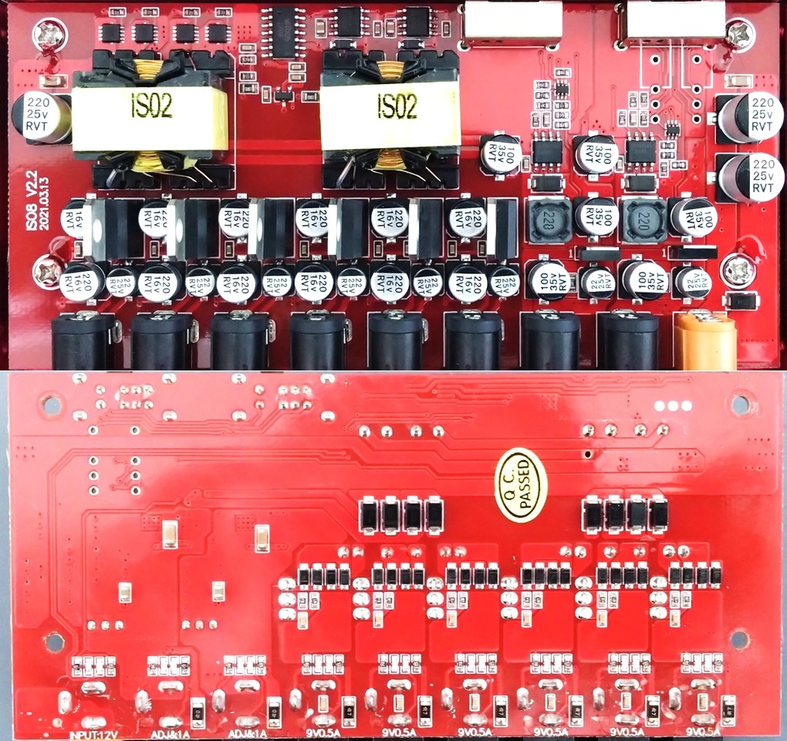
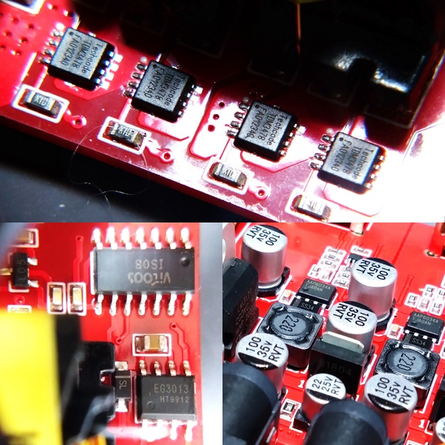
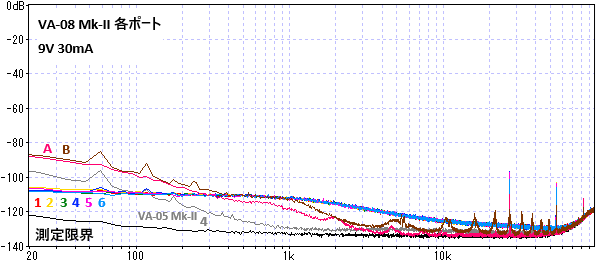
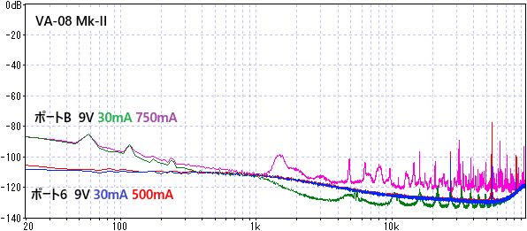
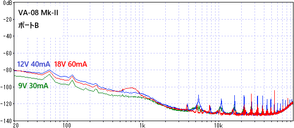

VITAL AUDIO POWER CARRIER VA-08 Mk-II 分解・測定
2024年07月26日 カテゴリー：修理・改造・解析

前回のVITAL AUDIO POWER CARRIER VA-05 Mk-IIに引き続き、VA-08 Mk-IIについてどのようになっているか調べました。※VA-08 Mk-IIは2017年4月発売で、VA-05 Mk-IIより古い機種です。
▽VA-08 MkII 基板画像

＜主なIC＞
TDM3478：N-Channel MOSFET
VITOOS ISO8：特注IC？
EG3013：ハーフブリッジドライバ
AAP6034A：DC-DCコンバータ
LM317T：リニアレギュレータ
2SD1804：NPNトランジスタ
ICや基板に印字がある通り、製造はVITOOSのようです。ハーフブリッジ方式のDC-DCコンバータと思われます。9V固定ポートではリニアレギュレータ、電圧可変ポートはDC-DCコンバータICとトランジスタのリップルフィルタが使われています。このDC-DCコンバータはMXR MINI Iso-Brick Power Supplyと同じです（参考：MXR mini iso-brickの解析）。
【電圧測定】
| 9V 30mA | 9V 250mA | 9V 500mA | 9V 750mA | 12V 40mA | 12V 333mA | 12V 667mA | 18V 60mA | 18V 500mA | |
| A | 9.21V | 9.08V | 8.97V | 8.86V | 12.28V | 12.15V | 11.99V | 18.38V | 18.17V |
| B | 9.31V | 9.17V | 9.06V | 8.95V | 12.41V | 12.30V | 12.17V | 18.58V | 18.37V |
| 1 | 9.26V | 9.15V | 9.02V | - | - | - | - | - | - |
| 2 | 9.23V | 9.12V | 9.01V | - | - | - | - | - | - |
| 3 | 9.28V | 9.17V | 9.05V | - | - | - | - | - | - |
| 4 | 9.24V | 9.14V | 9.02V | - | - | - | - | - | - |
| 5 | 9.27V | 9.17V | 9.05V | - | - | - | - | - | - |
| 6 | 9.26V | 9.15V | 9.03V | - | - | - | - | - | - |
それなりにズレがあるため、カレントダブラーケーブルは使わない方がよいでしょう。18V出力は、高めの電圧となることがあるようです。
【ノイズ測定】
以前と同様オーディオインターフェイスに接続して測定しています。

9V固定ポートでは低音域のノイズが少なく、ポート間の差がありません。電圧可変ポートでは、低音域のノイズは多めとなっています。VA-05 Mk-IIの方が低ノイズなのは、リップルフィルタのコンデンサ容量が大きくなっているためではないかと考えられます。
・電流、電圧を変更した場合

9V固定ポートでは、電流を増やすとスイッチングノイズだけが増えています。電圧可変ポートでは、電流・電圧を変えた場合のノイズ増加があります。なぜか18Vよりも12Vの方がノイズが多めです（ポートAでも同様の結果でした）。
【温度測定】
室温28度、木の床に直に置いた状態、ポート1～6合計1.5Aという条件で1時間通電しました。筐体の温度は41度、ACアダプターの温度は52度となりました。大電流で使用する場合、やはり温度上昇に注意した方がよさそうです。